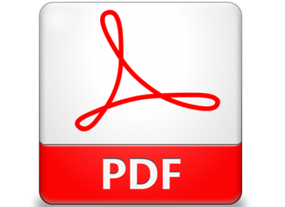

About, Contact and Instructions
About
Developed by Premium Support Services team at Autodesk, Inc.
Get the source code.
Contact us
Question? Suggestions? Contact us directly or see our open issues.
Instructions
- You need an account on

- Click the Sign in button to login
- A folder tree will appear on the left. Click the item to expand
- Navigate to a DWG file and click on a sub-item 'version' to view
- The DWG drawing will appear in the right pane
- Once you are viewing the drawing file, click on the 'PDF export'  toolbar button
- Open the .PDF file with Adobe Reader